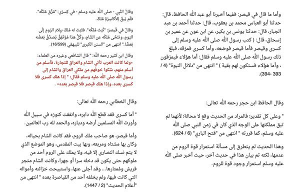
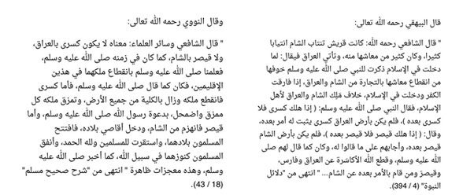
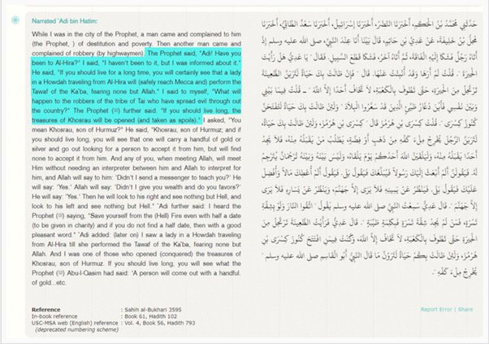

Introduction
This hadith is often quoted as an attempt to show that the Prophet made a false prophecy:
Narrated Abu Huraira: Allah's Messenger (ﷺ) said, "When Khosrau is ruined, there will be no Khosrau after him;
and when Caesar is ruined, there will be no Caesar after him. By Him in Whose Hands my life is, you will spend
their treasures in Allah's Cause."
Sahih Al Bukhari 3120
They argue that there was a Caesar after the Caesar during the time of the Prophet صلى الله عليه واله وسلم died
which would mean that this is a false prophecy. This conclusion is however false as will be demonstrated below
and this is in fact a true prophecy.
Discussion
Below follows the earliest (many of them contemporary to Bukhari) scholarly commentaries on the above statement
of the Prophet صلى الله عليه واله وسلم:
Abu Hatim al-Razi (811–890 AD/189-268 AH) commented on the Prophet’s (ﷺ) statement;
“When Khosraw is ruined, there will be no Khosraw after him” means, in his controlled territory which was Iraq;
and his (ﷺ) statement, “when Caesar is ruined, there will be no Caesar after him” means in his controlled territory
which was Syria. The statement does not mean that no one would be installed as Khosraw or Caesar after the death of both.
Actually, these two lands (Syria & Iraq) were conquered, as predicted, and all praise and favour belong to Allah. And Allah knows best.
“is the title for whoever ruled the Persian Empire while Caesar was the title for whoever ruled the Roman Empire.
This statement of the Prophet (صلى الله عليه واله وسلم) raised some questions. The Persian empire lasted till the
Caliphate of ‘Uthman (رضي الله عنه) when the last emperor was killed. The Roman Empire met its end in a similar manner.
These ambiguities could be cleared by what was meant in the Hadith, which was that Khosrow’s authority shall
not abide in Iraq and that Caesar’s authority shall not abide in Syria. This is reported from Al-Shafiʽi (762-820 AD/145-198 AH).
[….]
He said, “The Prophet (صلى الله عليه واله وسلم) was prompted into making this statement by the fact that the Quraish
used to come to Iraq and Syria as traders. When they embraced Islam, they feared that they would be prevented from
entering these two regions because of their acceptance of Islam. So, the Messenger of Allah (صلى الله عليه واله وسلم)
made this statement to them in order to relieve their fears and to give them good tidings that Roman and Persian [non-Muslim]
control over the two regions (Syria & Iraq) shall come to an end.”
Imam al-Khattabi (932-1010/310-388 AH) said:
“The meaning of ‘when Caesar is ruined, there will be no Caesar after him’ is that there shall not be any Caesar who
would be as powerful and influential as the Caesar of that time. The Caesar then was living in Jerusalem, a city
without visitation rights where Christians did not have complete religious rites. No one had ever gone to Rome without
having visited the city either publicly or secretly. So, the Caesar of the time was expelled from the city and its
treasures were rendered open, and no Caesar ever held control over the city afterwards.“
The image below contains references and the original Arabic from the above scholars and more who agree that
Muhammad (ﷺ) was right when he said there would be no Caesar after Caesar since it was only about As-Sham as they
point out:


“The Prophet (ﷺ) here uses the defeat of Khosrow as a way of responding to someone who was worried about the safety
of the Arabian Peninsula (i.e., the Hijaz region). Caesar’s defeat is mentioned in the same sense as Khosrow’s
elsewhere. Shafiʽi seemed to pick up on this, hence limiting it to Iraq & Ash-Sham. Al-Hira here is in reference
to Iraq. I urge you to look it up.

So in understanding this hadith, it is only referring to the Caesar in the area of Iraq and Syria which is true.
After those individuals, neither empire maintained any presence in those two regions.
Conclusion
The hadith is in fact a true Prophecy since the context shows it's referring to the a specific geographical region.